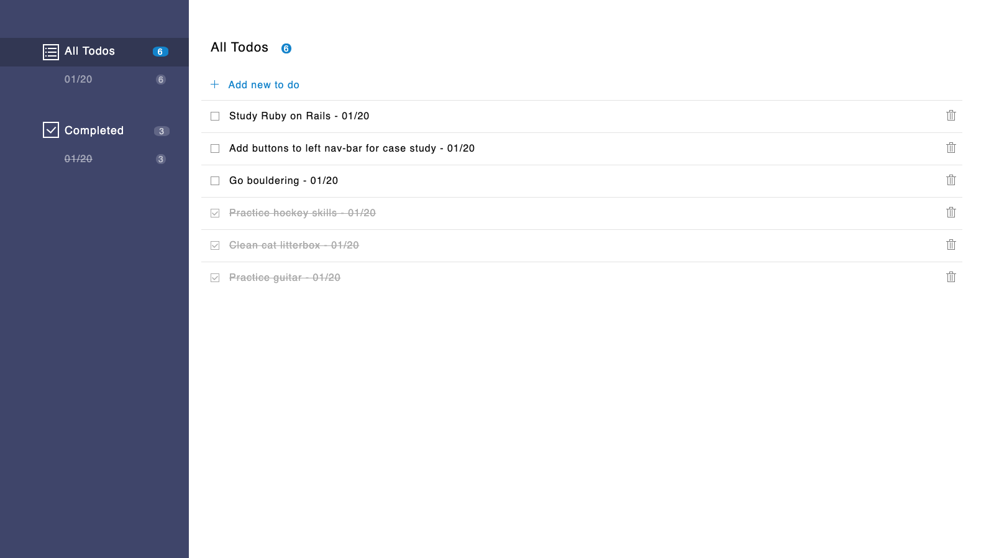

Ben Harvey
I'm a full stack software engineer in Portland Maine with years of experience in Node/JavaScript, Ruby/Rails, Docker, React.js, and PostgreSQL.
I recently built RedPoint, a web-native computational notebook for programmers.

RedPoint is an open source, web-native notebook optimized for sharing and presenting code, with support for multiple languages, webhooks and APIs.
Read our case study to learn about the engineering behind Redpoint, including how we strengthened security with container isolation and a secure runtime, buffered incoming webhook data with a Redis queue, and wrote a reverse proxy server from scratch with Node.js to forward HTTP and WebSocket traffic.
Read the RedPoint case studyOther projects
-

Postit!
A Reddit-like application built with Ruby on Rails and PostgreSQL. Allows users to authenticate, create, comment, upvote or downvote posts, and edit profile information.
-

Airline Routes
An React application that allows users to view and filter airline routes on a clickable svg map. Bootstrapped with Create React App.
-

GrindStone
A responsive application for personal task management, built with a Ruby/Sinatra back end and JavaScript(ES6), JQuery, and Handlebars.js front end.